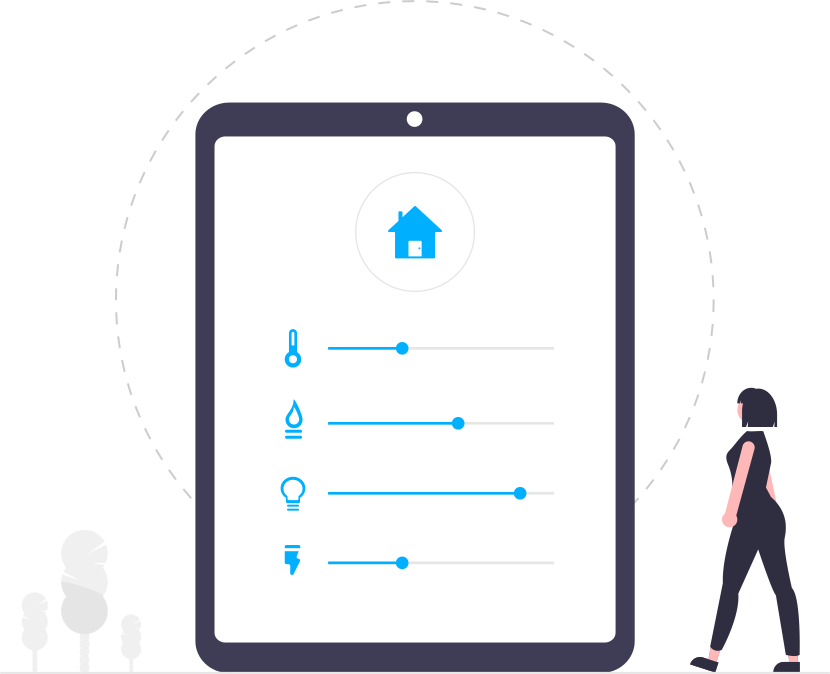

<!--
<div class="bg">

  <ion-row>
    <ion-label style="margin: 5%; font-size: xx-large;">
      <ion-icon (click)="back()" style="margin-bottom: -5px;" name="arrow-back-circle"></ion-icon>
      Cihaz Bağla</ion-label>
    <ion-col style="text-align: right;">

  <ion-button  (click)="blesiken()" size="large" style="width: 56px;" shape="round" fill="clear">
    <ion-icon   style="font-size: xxx-large; position: absolute" color="dark" name="reload-circle"></ion-icon>
  </ion-button>
    </ion-col>
  </ion-row>


  <div class="round" (click)="press()">
    <ion-icon name="bluetooth"></ion-icon>
    <ion-label >Selsmart</ion-label>
  </div>

</div>
-->


<ion-content fullscreen class="ion-padding" scroll-y="false">
  <ion-slides pager="true" (ionSlideDidChange)="demo($event)">
    <ion-slide id="1">
      <div class="slide">
        
        <h2>Nasıl Cihazımı Bağlarım</h2>
        <p>
          Bu yönerge ile SelSmart cihazlarınızı kolayca intarnete bağlayabilirsiniz.
        </p>
      </div>
    </ion-slide>

    <ion-slide id="2">
      
      <h2>WiFi bağlantınızı yapın</h2>
      <p>
        Cihazınızın güç bağlantısını yapın daha sonrasında uygulamaya dönün
            </p>
    </ion-slide>

    <ion-slide id="3">
      
      <h2>
          WiFi ağına bağlandı isek
      </h2>
      <p>
        Selsmart wifi ağına bağlandı iseniz her şey tamam demektir sıradaki adım Cihaza bağlan butonuna basmak ve cihazı wifi
        bilgilerini girmek olacak.      </p>
    </ion-slide>

    <ion-slide>

    <ion-button (click)="openIframe()">Cihaza bağlan </ion-button>

    <!-- Iframe -->
    <iframe *ngIf="iframeSrc" [src]="iframeSrc" style="    width: 100%;
    height: 90%;
    box-shadow: none;
    border-style: none;"></iframe>

    </ion-slide>


    <ion-slide>
      
      <h2>Harika Cihaz eklendi !</h2>
      <ion-button (click)="gec()" fill="clear">Ana ekrana dön <ion-icon slot="end" name="arrow-forward"></ion-icon></ion-button>
    </ion-slide>
  </ion-slides>


</ion-content>
